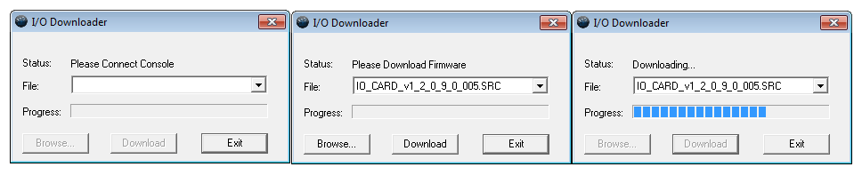

Note: This option is for use with older I/O cards.
{Upgrade I/O Firmware} is used to upgrade the firmware in the desk’s I/O card.
When you first open the I/O Downloader, it will look for the connected console. This may take a second or two.
Once the console is found, the downloader will search for the needed files. If it finds the file, it will list it and you can click {Download}. If it doesn't find the file, you can use {Browse} to look for the needed file and selected it. Once finished, click {Exit}.